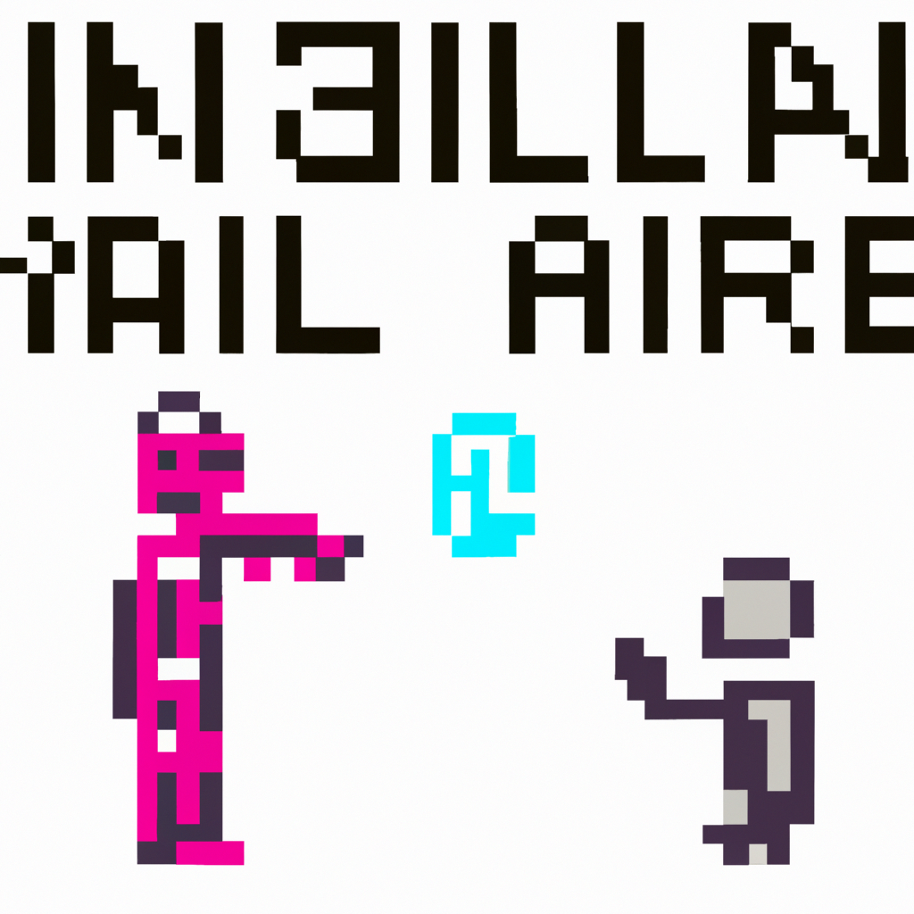

Future of AI and human
Chat GPT (Generative Pre-trained Transformer) is a type of AI technology that has been gaining a lot of traction in the tech industry. This technology allows chatbots to take on more complex conversations and tasks, better simulating human interactions. Chat GPT is powered by massive datasets that have been pre-trained to understand natural language, allowing it to understand and respond to a user’s input more accurately.
As chatbots become more and more advanced, there is a fear that they will replace humans in certain roles. This is especially true in customer service roles, where chatbots are already being used to automate mundane conversations. This can lead to job losses in those industries, although it is not clear how widespread the impact will be.
However, the industrial revolution has already shown us that technological progress can actually create more jobs in the long run, rather than taking them away. AI and Chat GPT are no exception, as they are also creating new opportunities for humans to do more complex and interesting work. For example, AI-powered customer service systems can free up customer service representatives from mundane tasks, allowing them to focus on more complex issues and customer relations.
The future of AI and Chat GPT is uncertain, but it is clear that it will play a major role in the technology industry going forward. It will be up to us, as a society, to make sure that AI is used responsibly and ethically, without taking away jobs from humans. With the right policies and regulations in place, AI and Chat GPT can become powerful tools for improving the quality of life of everyone.